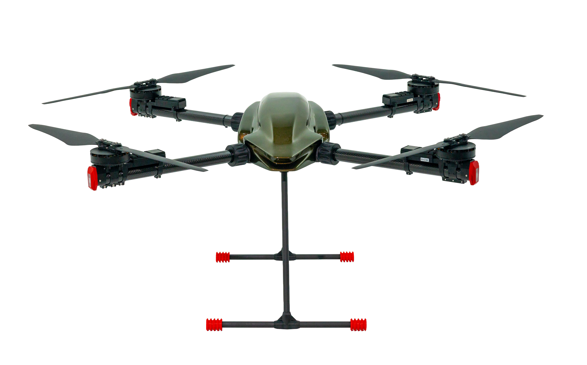

A compact high-capability professional UAV platform
Designed for payload, inspection, imaging, and specialized field operations.
Legal is InSky’s lead near-term commercial platform. It is designed to combine low structural weight, strong useful payload capability, and a broad mission envelope in a compact professional aircraft.
Empty weight
9.8 kg
Ready-to-fly without payload
14.6 kg
FAR Part 107 payload
10.3 kg
Absolute maximum payload
30 kg
Endurance range
12 min at 30 kg payload to 70 min empty
Mission fit
Payload, inspection, imaging, specialized field operations.

Capability beyond the standard threshold
Legal is designed with capability beyond the standard 55 lb U.S. small-UAS operating threshold.
In the United States, operations above that threshold require the appropriate regulatory exemption, including 44807 where applicable.
Built for serious market validation
Legal’s early commercial path is centered on test validation, showroom and demo readiness, distributor and mission-fit conversations, and the conversion of serious interest into reservations.
Discuss a mission